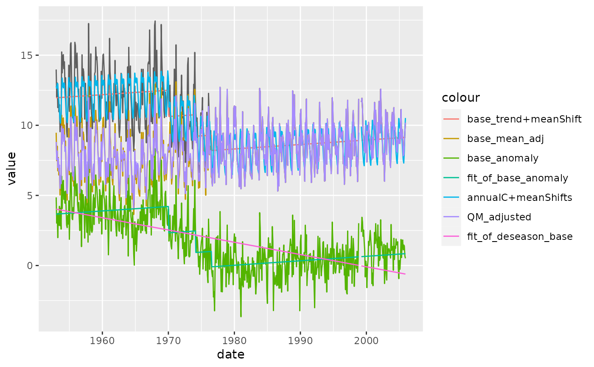

StepSize.RdStepSize
StepSize(
InSeries = NULL,
InCs,
output,
MissingValueCode = "-999.99",
GUI = FALSE,
plev = 0.95,
Iadj = 10000,
Mq = 10,
Ny4a = 0,
is_plot = TRUE
)## example 01 ------------------------------------------------------------------
data <- dat_example01
metadata <- data.table(date = c("1966-11-01", "1976-07-01", "1980-03-01"))
r <- RHtests_process(data, NULL, metadata, outdir = "OUTPUT/example01")
#> [stepwize] 1th iteration:
#> [data.table]:
#> # A data frame: 4 × 14
#> kind Idc date Ic Nseg steps…¹ probL probU plev PFx PFx95l PFx95h
#> <dbl> <chr> <dbl> <dbl> <dbl> <dbl> <dbl> <dbl> <dbl> <dbl> <dbl> <dbl>
#> 1 0 "YifD" 1.97e7 167 205 0.449 0.959 0.964 0.95 4.66 13.9 18.7
#> 2 1 "Yes " 1.97e7 205 87 -2.26 1 1 0.95 49.2 13.2 17.7
#> 3 1 "Yes " 1.97e7 254 78 -1.54 1 1 0.95 25.0 13.1 17.5
#> 4 0 "YifD" 1.98e7 283 73 -0.859 0.990 0.992 0.95 7.46 13.1 17.4
#> # … with 2 more variables: prob <dbl>, PFx95 <dbl>, and abbreviated variable
#> # name ¹stepsize
#> [stepwize] 2th iteration:
#> [data.table]:
#> # A data frame: 3 × 14
#> kind Idc date Ic Nseg steps…¹ probL probU plev PFx PFx95l PFx95h
#> <dbl> <chr> <dbl> <dbl> <dbl> <dbl> <dbl> <dbl> <dbl> <dbl> <dbl> <dbl>
#> 1 1 "Yes " 1.97e7 205 87 -2.24 1 1 0.95 48.9 13.3 17.7
#> 2 1 "Yes " 1.97e7 254 78 -1.52 1 1 0.95 24.6 13.2 17.6
#> 3 0 "Yes " 1.98e7 283 379 -1.03 1 1 0.95 20.7 14.4 19.3
#> # … with 2 more variables: prob <dbl>, PFx95 <dbl>, and abbreviated variable
#> # name ¹stepsize
plot_output(r$data)
